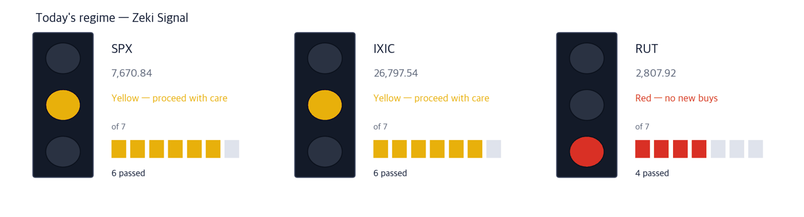

Memory stocks wait on Micron as yields stay high
Sept. 30, 2026 · Prices as of the Sept. 29 close
Companies we do not own, found in the newspapers — with the figures behind why they might earn their place.
Before the open
- No holding reports within 5 sessions
- Distance to our exits - we sell when the MACD line (as a share of price) goes below zero, or at the stop. Smaller is closer: Iridium Communications +6.8% above stop · MACD line +0.6% · HF Sinclair +19.9% above stop · MACD line +6.1% · Marathon Petroleum +18.3% above stop · MACD line +6.2% · Dell Technologies +34.4% above stop · MACD line +6.8%
No calls on direction.
Dow 51,350 -0.26% | Nasdaq Comp. 26,798 -0.09% | S&P 500 7,671 -0.17% | Russell 2000 2,808 -0.35% | 10-yr UST 5.26% +0.02pt | Zeki Signal Yellow |

Wait - the stance the signal implies.
Green favours buying, yellow says wait, red says hold off. The cells count how many of seven conditions are met - more cells mean the advance is broader. The signal is computed on the Sept. 29 close. The S&P 500 and Nasdaq Composite meet 6 of 7 (Yellow); the Russell 2000 meets 4 (Red). Combined, the signal is Yellow.
In New York on Tuesday the S&P 500 fell 0.17% to 7,670.84. The Nasdaq Composite lost 0.09%, the Dow 0.26% and the Russell 2000 0.35%. The Treasury selloff went on, lifting the 10-year yield to 5.26%. The Dow and the Russell 2000 slipped to three-month lows, while chips and AI hardware rose. Brent crude fell 2.56% to $102.59 a barrel. (WSJ, IBD)
Executive summary - what to do now
Three decisions before the open.
What to do today
1. Micron's results tonight set the direction for memory stocks. If you add before them, buy smaller.
Micron reports after the close on Wednesday. Analysts expect revenue to rise 354% to $51.3 billion and earnings per share to rise 947%. Seagate and Sandisk are waiting on the same release. (IBD, 01:02 ET Sept. 30)
2. The pre-open inflation report sets the yield. There is time to act after it.
August PCE inflation is due at 8:30 a.m. ET. Core inflation is expected to ease to 3.2% from 3.3%. New York Fed President John Williams suggested the next rate increase could wait until December. (WSJ, IBD)
3. The autumn IPO slate is wobbling. There is no hurry on new listings.
Choppy markets and fears over AI safety are unsettling the string of large listings that was expected this autumn. (WSJ front page)
So what do we do: Seagate Technology is the one well-grounded name. Micron, Sandisk and Bloom Energy each miss one test. Memory stocks can move sharply after Micron reports tonight, so keep size small before the release.
First, this week's economy
One number: the 10-year Treasury yield at 5.26%. Three dates this week:
| Date | What to watch | What it changes |
|---|
| Sep 30 (Wed) | August PCE inflation · Micron results after the close | A soft print eases yields and gives growth stocks room; Micron moves the whole memory group |
| Oct 1 (Thu) | ISM manufacturing index | A strong reading firms up expectations of further rate hikes |
| Oct 2 (Fri) | September jobs report | The week's biggest release; rates, the dollar and stocks move together |
Why the story matters
Stocks found in the news
Theme 1 - Memory stocks ahead of Micron
AI data centres are running short of memory chips and storage. Micron's results on Wednesday night are the first hard number on how long that demand lasts; analysts expect revenue of $51.3 billion. On Sept. 29 chips and AI hardware rose even as the indexes fell. If Micron's results and guidance beat, Seagate and Sandisk, which sell into the same build-out, tend to move with it. (IBD)
| Theme 1 - Memory stocks ahead of Micron | | Seagate Technology (STX) | Well grounded |
| Close | Day | Week | 20 sessions |
|---|
| $913.45 | -0.87% | -0.69% | +10.27% |
| 3 months | Zeki Strength | Zeki Flow | From high |
|---|
| -5.34% | 96 | A | -16.5% |
| Who | Seagate Technology, maker of high-capacity hard drives for data centres. | | What | Fell 0.87% to $913.45. | | When | Tuesday, Sept. 29. | | Where | Listed on Nasdaq. | | Why | Demand for storage to hold AI-generated data is rising. | | How | Volume on the down day was 0.58 times the 50-day average, light. |
Judgement — Clears all four of our tests. Zeki Strength 96; three-month and two-week Zeki Flow both A. Up 10.27% over 20 sessions. Confirmation — A close above the Sept. 29 high of $944.43 on volume above the 50-day average of 4.45 million shares. Walk away if — A close below the 21-day exponential average of $872.01. |
| Theme 1 - Memory stocks ahead of Micron | | Micron Technology (MU) | Grounded |
| Close | Day | Week | 20 sessions |
|---|
| $1,065.08 | +1.05% | -2.84% | +11.09% |
| 3 months | Zeki Strength | Zeki Flow | From high |
|---|
| -7.73% | 97 | C | -12.2% |
| Who | Micron Technology, the largest US memory-chip maker. | | What | Rose 1.05% to $1,065.08 on a day the index fell. | | When | Tuesday, Sept. 29; results come after Wednesday's close. | | Where | Listed on Nasdaq. | | Why | Prices and volumes of high-bandwidth memory for AI servers are rising together. | | How | Volume thinned to 0.61 times the 50-day average ahead of the report. |
Judgement — Clears three of four. Zeki Strength 97. Three-month Zeki Flow is C, mid-pack, short of the A or B bar. Confirmation — After the report, a close above the Sept. 29 high of $1,082.66. Walk away if — A close below the 21-day exponential average of $1,013.28. |
| Theme 1 - Memory stocks ahead of Micron | | Sandisk (SNDK) | Grounded |
| Close | Day | Week | 20 sessions |
|---|
| $1,729.76 | +0.98% | -8.33% | +10.41% |
| 3 months | Zeki Strength | Zeki Flow | From high |
|---|
| -23.92% | 97 | C | -25.9% |
| Who | Sandisk, seller of NAND flash memory and storage. | | What | Rose 0.98% to $1,729.76. | | When | Tuesday, Sept. 29. | | Where | Listed on Nasdaq. | | Why | If Micron reports firmer NAND prices, Sandisk is among the first to feel it. | | How | Down 8.33% over the week and 25.9% below its one-year high. |
Judgement — Meets three of four. Strength is high at 97. Three-month Zeki Flow is C; two-week Zeki Flow has improved to B. Confirmation — A close back above the Sept. 25 close of $1,777.80. Walk away if — A close below the 21-day exponential average of $1,681.51. |
Theme 2 - Power for data centres
As data centres multiply, companies that can supply power on site have become scarce. Bloom Energy, which makes power on site with fuel cells, fell 8.95% on Sept. 28 and then rose 10.8% on Sept. 29, recovering the loss in a day. It was the S&P 500's second-best performer that day. Bloom joined the S&P 500 on Sept. 21. (IBD)
| Theme 2 - Power for data centres | | Bloom Energy (BE) | Grounded |
| Close | Day | Week | 20 sessions |
|---|
| $291.25 | +10.80% | +5.32% | +41.18% |
| 3 months | Zeki Strength | Zeki Flow | From high |
|---|
| -3.78% | 96 | D | -15.8% |
| Who | Bloom Energy, maker of fuel-cell power systems. | | What | Rose 10.8% to $291.25. | | When | Tuesday, Sept. 29. | | Where | Listed on the New York Stock Exchange. | | Why | It can make power right beside a data centre without waiting for the grid. | | How | Volume on the up day ran at 1.47 times the 50-day average. |
Judgement — One test short. Zeki Strength 96, up 41.18% over 20 sessions. Three-month Zeki Flow is still weak at D. Confirmation — A close above the Sept. 29 high of $302.35. Walk away if — A close below the 21-day exponential average of $262.08. |
Theme 3 - A new-car drought and used cars
US car dealers are short of new models to sell; fewer new models are reaching the market than at any time in recent history, a hangover from the industry's rush into EVs and its abrupt pullback. When new cars are scarce, part of the demand shifts to used cars. (WSJ front page)
| Theme 3 - A new-car drought and used cars | | CarMax (KMX) | Needs checking |
| Close | Day | Week | 20 sessions |
|---|
| $59.23 | +4.74% | +4.20% | -3.42% |
| 3 months | Zeki Strength | Zeki Flow | From high |
|---|
| +11.99% | 82 | A | -7.8% |
| Who | CarMax, the largest US used-car retailer. | | What | Rose 4.74% to $59.23. The reason for the move was not confirmed in today's papers. | | When | Tuesday, Sept. 29. | | Where | Listed on the New York Stock Exchange. | | Why | Scarce new cars tend to support used-car prices and demand. | | How | Volume surged to 5.42 times the 50-day average. |
Judgement — Clears one of four. Zeki Strength 82 is below our 90 bar, and the stock is down 3.42% over 20 sessions. Hence needs checking. Confirmation — A close above the Sept. 29 high of $63.67. Walk away if — A close below the 21-day exponential average of $58.82. |
Theme set aside today - Cruise results that beat oil
Carnival reported higher third-quarter profit and revenue; demand held up despite high oil prices. The stock rose 13.41% on Sept. 29 on volume 3.73 times its 50-day average. But its Zeki Strength is 21 and its trend gauge (the MACD line) is still below zero, 26.1% under its one-year high. One day's jump has not reversed the trend, so we set it aside today. (WSJ What's News)
One more set aside for the same reason
AT&T signed a $3 billion deal for Corning to supply fiber and cable to expand its network. Corning rose 4.70% on Sept. 29. But it is down 37.87% over three months and its trend gauge is below zero. The story was large; the trend has not turned. (WSJ What's News)
Today's finds on one page
If you would buy today - 1 well grounded: Seagate Technology (STX)
| Name | ①up over
20 sessions | ②Strength
90+ | ③flow 3mo
A or B | ④2wk not
weaker | Met | Weight of
evidence |
|---|
| STX | O | O | O | O | 4/4 | Well grounded |
| MU | O | O | X | O | 3/4 | Grounded |
| SNDK | O | O | X | O | 3/4 | Grounded |
| BE | O | O | X | O | 3/4 | Grounded |
| KMX | X | X | O | X | 1/4 | Needs checking |
The four tests: (1) up over 20 sessions; (2) Zeki Strength 90 or higher; (3) three-month Zeki Flow A or B; (4) no weakening over the last two weeks. The count of O's sets the weight of evidence.
So what do we do: Seagate Technology is the one well-grounded name. Micron, Sandisk and Bloom Energy fall short on three-month Zeki Flow. CarMax needs checking because its strength is short.
Accumulation and distribution - where the money went
The US publishes no daily filing of what institutions bought. The grades below estimate buying pressure from trading volume; they are not a tally. Data through the Sept. 29 close.
Flow and volume, one row | Name | Flow 3mo→2wk | Volume | How to read it |
|---|
| Fair Isaac FICO | E → E = | 3.66x | Watch✗ — Buying over both 3 months and 2 weeks | | Costco Wholesale COST | C → A ↑ | 1.47x | Watch✗ — Buyers came in hard | | Markel Group MKL | E → E = | 1.10x | Watch✗ — Buying over both 3 months and 2 weeks | | Willis Towers Watson Public Limited Company WTW | E → E = | 1.05x | Watch✗ — Buying over both 3 months and 2 weeks | | Dutch Bros BROS | E → E = | 0.93x | Watch✗ — Buying over both 3 months and 2 weeks | | NetApp Inc NTAP | A → A = | 0.90x | Watch✓ — Buying over both 3 months and 2 weeks | | Lincoln Electric Holdings LECO | A → A = | 0.85x | Watch✗ — Buying over both 3 months and 2 weeks | | The Trade Desk TTD | E → E = | 0.85x | Watch✗ — Buying over both 3 months and 2 weeks |
Volume is the last 5 sessions against the 50-day average. |
Did money follow the names we found?
Even when the story and the price agree, we check the money separately. The table asks whether the last five sessions' volume beat the 50-day average.
| Name | Above 50-day avg? | Flow 3mo → 2wk | How to read it |
|---|
| Seagate (STX) | 0.65x ✗ below | A → A | Wait — Holding, but volume has dried up |
| Micron (MU) | 0.62x ✗ below | C → A | Check — Higher, but on thin volume |
| Sandisk (SNDK) | 0.51x ✗ below | C → B | Check — Higher, but on thin volume |
| Bloom (BE) | 1.03x ✓ above | D → C | Check — Higher, but on thin volume |
| CarMax (KMX) | 2.72x ✓ above | A → B | Caution — The grade is falling while volume rises |
The words describe what is happening, not our trades. Watch means price and volume agree; Caution means the grade is falling while volume rises; Wait means volume has dried up.
How the names we ran have done
Running total since 9/09. 96 names run so far; 87 have completed 5 sessions and are in the table below. The other 9 join as their prices arrive — they are not dropped. Base: close on the day run; benchmark: S&P 500 over the same days. Figures reflect US closes through 2026-09-29.
What it is. A record of the companies we found in the newspapers and named in the digest, marked at that day's close, then counted as the price moves. Grouped by how firm the evidence was.
What it is for. To keep a number on whether names picked from the news actually perform. Each name is recorded on the day it ran, so the winners cannot be chosen afterwards.
What it is not. Not a recommendation, not something we bought, and not yet a verdict. That comes once, from a pre-registered test, when both markets together reach 60 cases.
How long a record. Most of these numbers cover a few days. Prices rise for a few days and fall for a few days; the shorter the window, the more flattering — or the more punishing — it looks.
| Weight of evidence | Names | Beat S&P 500 | Winners led by | Losers trailed by | All averaged |
|---|
| Well grounded | 40 | 19 / 40 | +3.51%p | -2.79%p | +0.20%p |
| Grounded | 17 | 7 / 17 | +4.40%p | -3.91%p | -0.49%p |
| Needs checking | 19 | 10 / 19 | +3.69%p | -5.21%p | -0.53%p |
| No basis | 4 | 1 / 4 | +1.97%p | -10.22%p | -7.17%p |
| Excluded | 7 | 2 / 7 | +2.10%p | -6.69%p | -4.18%p |
| Well grounded 40 | | +0.20%p |
| Grounded 17 | | −0.49%p |
| Needs checking 19 | | −0.53%p |
| No basis 4 | | −7.17%p |
| Excluded 7 | | −4.18%p |
The centre line is S&P 500. Right is ahead, left is behind. The grey number is how many names are in that band.
Of 40 Well grounded names, 19 beat S&P 500. Those 19 led by 3.5%p on average; the 21 that lost trailed by 2.8%p. All together: +0.2%p.
Toward the verdict. Across both markets, 24 of 60 cases have 5 trading days behind them. At 60 we run the test we fixed in advance, once, and print what it says. Until then the table above is interim.
89 cases collected so far. Until the test fires we only count ups and downs. Paper tally; no trading costs deducted.
Intraday checklist
| When | What to watch | What it means |
|---|
| Before the open (08:30 ET) | Whether core PCE comes in below the expected 3.2% | A lower print eases yields and gives growth and small caps room |
| First 30 minutes (09:30-10:00 ET) | Whether the 10-year yield stays above 5.26% | If it holds, Russell 2000 weakness continues |
| Last 30 minutes (15:30-16:00 ET) | Whether Seagate finishes above its 21-day exponential average of $872.01 | Holding it means money is staying in memory stocks into the report |
| After the close | Micron's results and next-quarter guidance | Guidance above expectations moves the whole memory group on Thursday |
What to check this week
Thursday's manufacturing index and Friday's jobs report set the direction of yields. Investment bank Piper Sandler is in talks to combine with advisory firm Perella Weinberg. The Navy chose Boeing to build its next-generation fighter. The Treasury will automatically enroll 60 million children in the new Trump Accounts. (WSJ)
This report is for information only and is not individual investment advice. ZekiRex™ Apex US runs a rules-based simulated portfolio of $10,000,000 — there is no real account, no order and no fill. The performance shown excludes commissions, taxes and slippage, and the price data omits companies that were delisted, which biases the result upward (survivorship bias). Past performance does not guarantee future results, and investing carries risk of loss of capital.
Sources today - the Wall Street Journal print edition of Sept. 30 (front-page and What's News headlines and summaries) and IBD's pre-open column (01:02 ET Sept. 30). The economic calendar is from public weekly calendars. Prices are from Yahoo Finance; prices, Zeki Strength, Zeki Flow grades and the signal are as of the Sept. 29, 2026 close. We restate facts in our own words and do not reproduce articles.
This is the Rex Way, ZekiRex™